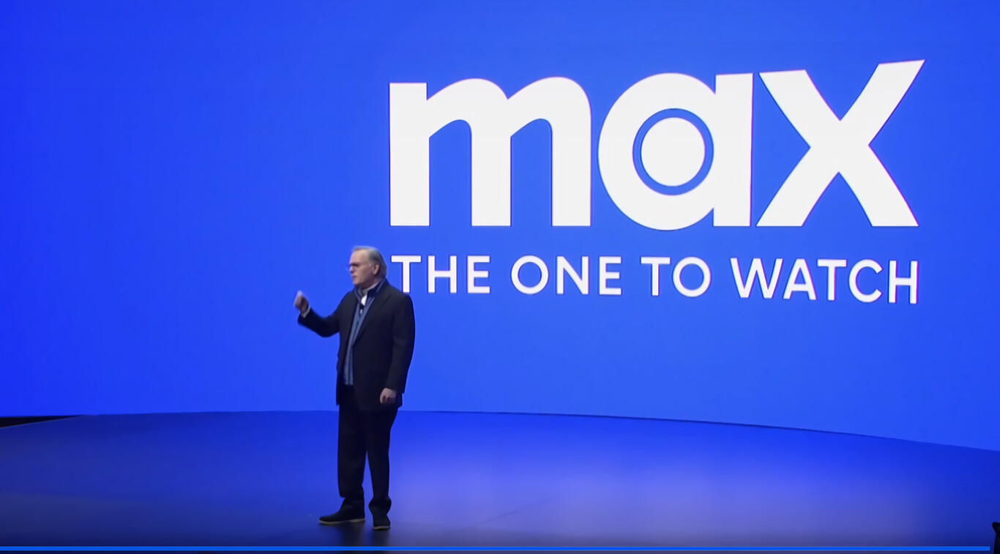

Webs recomendadas de películas
En esta sección encontrarás enlaces a algunas webs recomendadas relacionadas con películas. Estas plataformas ofrecen una amplia variedad de películas para disfrutar en tu tiempo libre.
 - Plataforma de streaming con una amplia variedad de películas.
- Plataforma de streaming con una amplia variedad de películas.-  - Otra plataforma popular para ver películas y series.
- - Base de datos en línea de información relacionada con películas, programas de televisión, y videojuegos.
- - Página web que proporciona información y recomendaciones sobre películas.
Netflix es recomendada por muchas personas debido a su amplio catálogo de películas, series y documentales de alta calidad. La plataforma ofrece una gran variedad de contenido para todos los gustos, desde producciones originales premiadas hasta clásicos del cine. Además, Netflix utiliza algoritmos sofisticados para recomendar contenido personalizado a cada usuario, basándose en sus preferencias y hábitos de visualización. Esto hace que sea más fácil para los usuarios descubrir nuevas películas y series que puedan disfrutar, lo que hace que la experiencia de ver contenido en Netflix sea muy satisfactoria para muchos.
HBO es conocida por su amplia variedad de películas y series de alta calidad, incluyendo producciones originales premiadas y clásicos del cine. La plataforma ofrece una experiencia de visualización sin anuncios, lo que la hace muy atractiva para muchos usuarios. Además, HBO utiliza algoritmos sofisticados para recomendar contenido personalizado a cada usuario, basándose en sus preferencias y hábitos de visualización. Esto hace que sea más fácil para los usuarios descubrir nuevas películas y series que puedan disfrutar, lo que hace que la experiencia de ver contenido en HBO sea muy satisfactoria para muchos.
IMDb es una de las bases de datos de películas más populares y completas en línea. La plataforma ofrece información detallada sobre películas, programas de televisión y videojuegos, incluyendo sinopsis, reparto, puntuaciones, críticas y mucho más. Además, IMDb ofrece recomendaciones personalizadas a los usuarios, basándose en sus preferencias y hábitos de visualización. Esto hace que sea más fácil para los usuarios descubrir nuevas películas y series que puedan disfrutar, lo que hace que la experiencia de buscar y ver contenido en IMDb sea muy satisfactoria para muchos.
FilmAffinity es una página web que proporciona información detallada sobre películas, incluyendo sinopsis, reparto, puntuaciones, críticas y mucho más. Además, FilmAffinity ofrece recomendaciones personalizadas a los usuarios, basándose en sus preferencias y hábitos de visualización. Esto hace que sea más fácil para los usuarios descubrir nuevas películas que puedan disfrutar, lo que hace que la experiencia de buscar y ver contenido en FilmAffinity sea muy satisfactoria para muchos.